제 1 장 서론
1.1 연구 배경
Kraus et al. (2021)의 연구에 따르면 SCOPUS Database 기준, 2020년까지 Business, Management 등 특정 7개 분야의 저널에 한해서 “Digital Transformation” 및 “Digital change”라는 용어가 사용된 논문은 832개로, [그림 1]에서 보듯이 특히 2018년부터 관련 논문이 쏟아지고 있으며, Digital Transformation이라는 연구주제가 최근까지 점점 큰 관심을 받고 있다는 것을 알 수 있다[1].
[그림 1] Digital Transformation과 관련된 논문 수 및 인용 수
(출처 : Kraus et al., 2021, p.3)
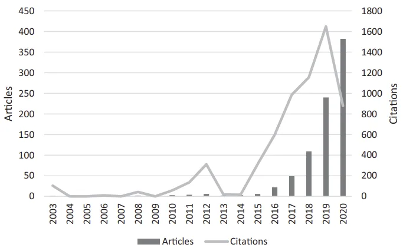
Digital Transformation에 대한 주목은 학계 뿐만이 아니라, 기업 및 일반인에게도 일어나고 있다. 이는 구글 트렌드를 이용한 검색어 “Digital Transformation”에대한 전 세계의 관심도를 통해서도 확인할 수 있는데, [그림 2]에서 나타나듯 2016년부터 최근 몇 년간 폭발적으로 관심이 증가했다는 것을 알 수 있다[2].
[그림 2] 구글 트렌드 Digital Transformation 검색어 관심도 (본인 작성)
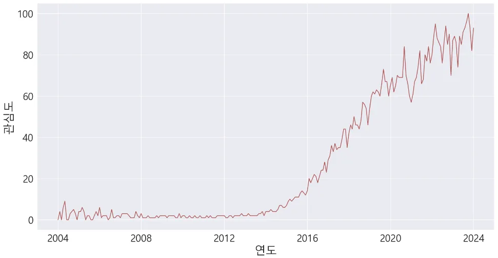
하지만 Digital Transformation(이하 디지털 전환)에 대한 뜨거운 관심에도 불과하고, 국내의 여러 연구 조사에 따르면 우리나라의 디지털 전환 수준은 아직까지 낮은 수준에 머물러 있는 것으로 평가된다[3-7]. 한국산업기술진흥협회에서진행한 조사에 따르면, 국내의 경우 디지털 전환을 적극 추진하는 기업은 9.7%
에 불과했으며, 일부 추진 중인 기업 20.9%를 합쳐도 30.6% 수준인 것으로 나타났다. 특히 대기업 및 중견기업의 디지털 전환 추진 비율이 48.9%로 거의 절반 수준인 반면, 중소기업의 경우는 29.9%로 이에 한참 못 미치고 있다[3].
[표 1] 국내 기업의 디지털 전환 추진 현황
(출처 : 한국산업기술진흥협회, 2020, p.2)
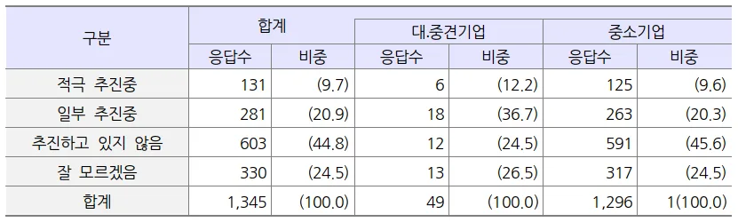
중소기업중앙회의 조사에서 중소기업의 대부분(하 : 71.7%)이 디지털 전환에대응하기 위한 디지털 전략을 보유하지 않은 것으로 나타났으며, 핵심 디지털기술 활용 역량에 대해서도 낮은 역량(하 : 63.0%)을 보유하고 있다는 응답을했다. 이 밖에 디지털 전문 인력 확보(하 : 68.8%), 디지털 교육 및 훈련 실시 (하 : 69.7%) 현황에서도 낮은 수준을 보였다[4].
중소기업 뿐만의 문제는 아니다. 산업통사자원부와 한국중견기업연합회가 실시한 중견기업 디지털 전환 실태 조사에서도 절반에 가까운 49.8%의 기업이 디지털 전환 대응 수준이 1단계(디지털 전환의 의미와 관련 기술들에 대해 알고있는 상태이며, 환경변화를 체감하고 기업에 무엇이 필요할지 고민하는 상황)라고 답했으며, 32.5%가 0단계(디지털 전환의 의미와 관련 기술에 대해 잘 알지못하는 상태이며, 환경변화를 체감하지 못하고 기업에 필요한 것이 무엇인지잘 모르는 상황) 수준이라 응답했다. 이에 반해 4단계(성숙기 단계로 디지털 전환 선도기업에 해당되며, 디지털 기술을 개발하거나 도입하여 변화에 적극적으로 대응하고 있는 상태)라고 응답한 수준은 1.2% 밖에 그치지 않았다. 이에 우리나라 중견기업의 디지털 전환 대응 수준의 평균은 0.9단계로 나타났다[5]. 이처럼 전반적으로 우리나라 기업의 디지털 전환 수준이 낮은 수준의 단계라는것을 알 수 있다.
[그림 3] 중소기업의 디지털 전략 보유 현황
(출처 : 중소기업중앙회, 2020, p.5)
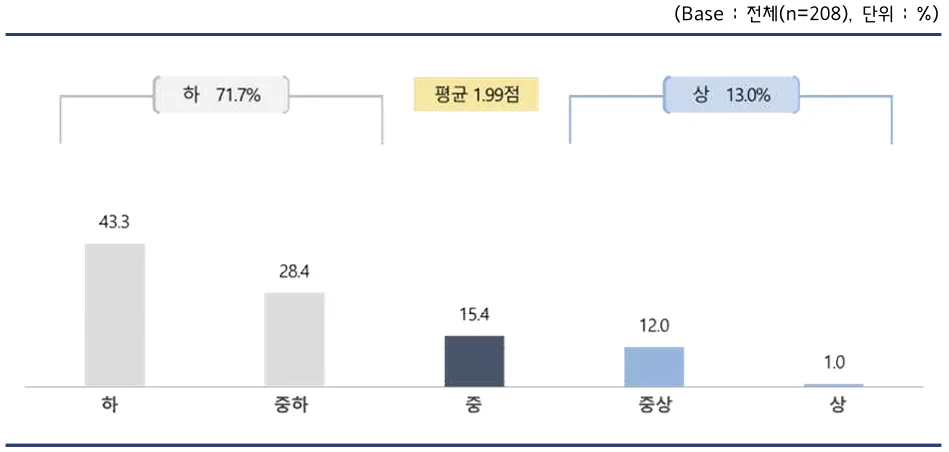
[그림 4] 중소기업의 핵심 디지털 기술 활용 역량
(출처 : 중소기업중앙회, 2020, p.13)
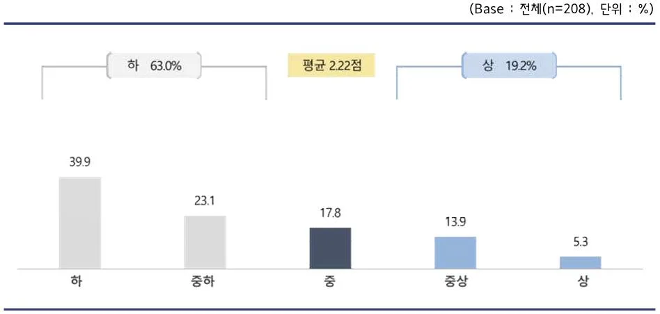
[표 2] 중소기업의 디지털 전문 인력 확보 현황
(출처 : 중소기업중앙회, 2020, p.16)
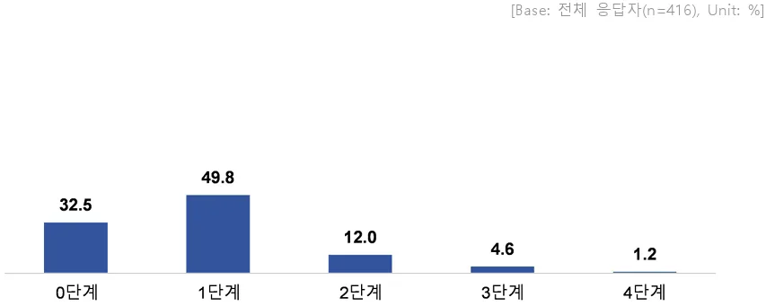
[표 3] 중소기업의 디지털 교육 및 훈련 실시 현황
(출처 : 중소기업중앙회, 2020, p.18)
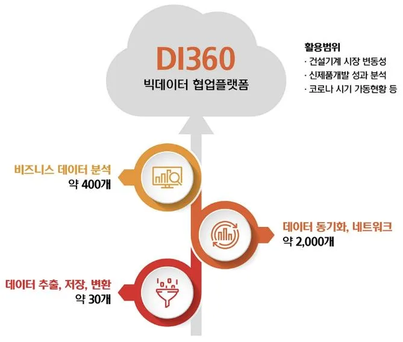
[그림 5] 중견기업의 디지털 전환 대응 수준
(출처 : 산업통상자원부, 한국중견기업연합회, 2021, p.53)
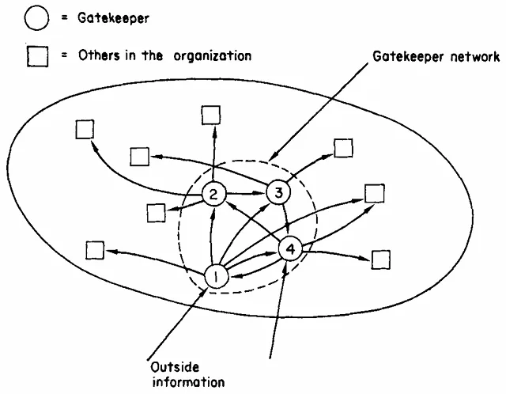
1.2 연구 목적
우리나라는 GDP 대비 제조업 비중이 27.8%로 경제에서 제조업이 차지하는
비중이 매우 높은 나라로 제조업의 디지털 체질 강화가 무엇보다 중요하다[6].
하지만 우리나라의 비제조업 대비 제조업의 디지털 전환의 수준은 낮은 편이다
[5, 7]. 이러한 이유로 제조업의 디지털 전환 촉진과 성공을 위한 많은 연구가필요한 상황이다.
2021년 두산그룹에서 HD현대그룹(옛 현대중공업그룹)으로 편입된 HD현대인프라코어는 건설중장비, 엔진 등을 생산 판매하는 사업을 영위하는 회사로, 국내에서 가장 먼저 팔란티어社의 빅데이터 플랫폼을 도입한 기업이자 디지털 전환의 성공 사례로 많은 주목을 받았다[8-9]. 국정원과 같은 정부 기관 뿐만 아니라, Trimble과 같은 해외 기업에서도 HD현대인프라코어에 빅데이터 플랫폼 도입에 대한 문의를 했었고, 최근까지도 삼성, 포스코 그룹에서 성공적인 사례를참조하기 위해 HD현대인프라코어를 방문하였다. 또한 HD현대인프라코어의 성공적인 사례를 바탕으로, HD현대 그룹은 팔란티어社와 합작사 설립을 준비 중에 있으며, 전 계열사로 팔란티어社의 빅데이터 플랫폼을 도입하였다[10].
[그림 6] HD현대인프라코어 빅데이터 협업 플랫폼 소개
(출처 : HD현대인프라코어 뉴스&미디어, 2022)
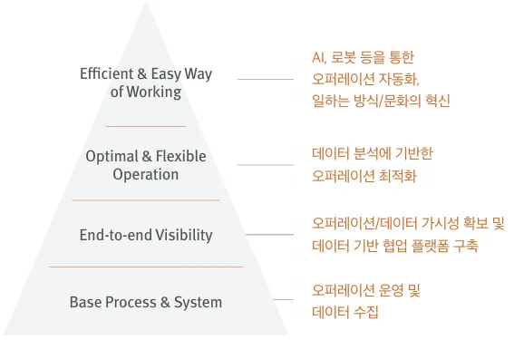
HD현대인프라코어는 빅데이터 플랫폼 도입 후 디지털 전환을 통해 데이터기반의 의사결정(Data-Driven Decision) 문화를 구축했으며, 이러한 문화를 바탕으로 업무 프로세스 혁신과 제품 개발 혁신의 단계에 이르는 사례들을 발굴했다[11-13]. 이에 본 연구에서는 HD현대인프라코어가 디지털 전환에 어떻게 성공할 수 있었던 요인에 대해 살펴보고자 하며, 특히 핵심 성공 요인이라 할 수있는 Gatekeeper가 조직의 디지털 전환에 미치는 영향에 대해서도 연구하고자한다. 마지막으로 본 연구를 통해 제조업의 디지털 전환에 대한 시사점을 도출하고자 한다.
제 2 장 이론적 배경
2.1 Digital Transformation
Gong and Ribiere (2021)의 연구에서는 무분별하게 사용되는 Digital Transformation 용어에 대한 통합된 정의를 도출하기 위해 SCOPUS와 EBSCO Database 내에서 Title 또는 Keywords에서 “Digital Transformation”을 포함하는 논문 371개를 추출하여, 이 중 Digital Transformation에 대한 134개의 정의를 개념적, 의미론적, 그리고 실용적 측면에서 분석하였다. 해당 논문에서는 Digital Transformation에 대한 정의를 “핵심 자원(Resources)과 능력(Capabilities)의 전략적 활용이 수반되어, 혁신적인 디지털 기술의 사용을 통해 가능케 된 근본적인변화 프로세스(Fundamental Change Process)”라고 했다. 또한 이에 더불어 “조직, 비즈니스, 산업, 사회 등을 급진적으로(Radically) 개선하며, 이해관계자들을 위해 가치 제안(Value Proposition)을 재정의하는 것을 목표”로 한다고 했다[14]. Digital Transformation에 대한 명확한 이해를 하기 위해서는 유사 용어와의 혼동을 피해야 한다. 먼저 “Digitization”은 아날로그 정보를 디지털 형식으로 변경하는 것을 말하며[15], Technical Process로 구분한다[16]. 반면 “Digitalization”은 디지털 기술을 이용한다는 점에서 Digital Transformation과 유사하다. 하지만 Digital Transformation이 Strategic Level에서의 결과 변화를 강조한다면, Digitalization은 Operational Level의 변화에 집중하며, 자동화 및 간소화, 최적화, 비용 감소와 같은 점진적(Incremental) 개선에 초점을 맞추어, 일련의 프로젝트로서 수행된다고 볼 수 있다[14].
이에 반해 Digital Transformation은 근본적이고, 급진적인(Radical) 변화를 수반하며, 새로운 구조 및 문화, 전략, 방법 등을 요구한다[14]. 게다가 Digital Transformation 전략은 비즈니스 중심의 관점에서 시작하여 디지털 기술 덕분으로 일어나는 제품, 프로세스, 조직 측면에서의 변환에 초점을 맞추고 있어, 그범위가 훨씬 넓다[17]. 또한 디지털 혁신은 기존의 경영 및 조직 운영 모델을급격하게 변화시킴과 동시에 사회 전체에 커다란 영향을 미치게 된다[6]. 이에 Digital Transformation은 Digitalization과 다르게, 프로젝트로서 수행될 수 있는 것이라고도 볼 수 없다[14].
Digital Transformation(이하 디지털 전환)의 성공 요소에 대한 연구에서는 그요인을 크게 기술, 조직, 환경적 측면으로 구분하고 있다. 기술적 측면의 요인으로는 디지털 인프라, 진보된 기술, 보안, 신뢰성 등이 있으며, 조직적 측면의요인으로는 경영층의 서포트, 문화, 전담 조직, 디지털 전략 등이, 환경적 측면에서는 데이터 플랫폼, 디지털 연결(Connectivity), 표준 등이 있다[19, 36]. 다만, 디지털 전환에 있어서 디지털 기술이 급진적 개선에 주요한 역할을 하지만, 전체 변화 프로세스의 일부일 뿐임에 유의해야 한다[14]. 실제로 전통적인기업들이 오늘날과 같은 디지털 시대에서 어떻게 변화와 수용을 해야 하는지에대한 Kane (2019)의 연구에 따르면, 그 답은 기술에 있지 않다고 한다. 오히려조사 결과 민첩하고, 혁신적이지 못한 조직과 변화하지 못하는 문화가 문제가된다고 말한다[18]. 제조업에 있어 디지털 전환의 성공 요소에 대한 Vogelsang et al. (2018)의 연구에서도 조직 측면의 요소들이 가장 중요하며, 기술 혁신이 없으면 디지털 전환이 가능하지 않지만, 기술만으로는 디지털 전환의 이점을 충분히 가질 수 없다고 한다[19].
디지털 전환의 성공을 위한 요소로 많은 연구에서 공통적으로 조직, 인력, 문화가 언급되고 있으며[6, 18-22, 36], 본 연구에서는 HD현대인프라코어가 조직적 (Organizational) 측면에서 어떻게 디지털 전환에 성공할 수 있는지를 정성적으로살펴보고자 한다.
2.2 Gatekeeper
“Gatekeeper”라는 용어는 원래 Kurt Lewin에 의해 비롯되었지만[23], 혁신 연구에서는 Thomas J. Allen에 의해 “Technological Gatekeeper”로 정의되었다. Allen (1970)의 연구에서는 정보 자체가 가지는 본질과 복잡성, 그리고 각 개인의 특성과 개인이 가지는 니즈의 불확실성 때문에 과학 및 기술 정보 전달의 자동화는 실패했다고 했다. 이러한 이유로 사람이 정보 전달의 가장 효과적인 매개체이며, 정보를 유연하고 빠르게 소통하는 능력이 과학 및 기술의 성과와 강하게연관된다고 한다[24].
조직으로의 새로운 정보의 유입은 조직 내 기술자들의 조직 밖 개인들과 접촉 및 소통에 의해 이루어진다. 하지만 모든 기술자들이 외부와의 소통에 능한것이 아니다. 조직 내에는 다른 사람들이 상당히 의존하는 소수의 중요한 인물들이 존재하는데, Thomas J. Allen은 이들을 “Technological Gatekeeper”로 정의했다. 새로운 정보들은 Gatekeeper를 통해 조직으로 유입되어, Gatekeeper Network를 통해 이 정보는 다른 Gatekeeper에게로 전달되며, 각 Gatekeeper로부터 조직의 다른 구성원에게 전파된다[24].
[그림 7] Gatekeeper Network의 기능
(출처 : Thomas J. Allen, 1970, p.18)
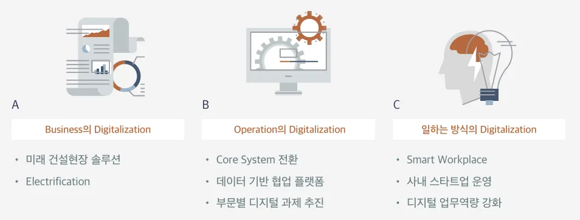
Cohen and Levinthal (1990)의 연구에 의하면 흡수역량(Absorptive Capacity)은 외부의 새로운 지식의 가치를 발견하고, 이를 흡수하고, 활용하는 능력을 말하며, 조직의 흡수역량은 외부 환경과의 직접적인 상호 작용과 조직의 하위 단위 간또는 하위 단위 내 지식 전이에 의존한다. 따라서 기업의 흡수역량의 원천을이해하기 위해서는 외부 환경과 기업 간의 커뮤니케이션 구조 뿐만 아니라, 기업 내 커뮤니케이션 구조에도 초점을 맞추어야 하는데, 이러한 구조의 Interface 에 위치한 개인들이 Gatekeeper들이다[25].
Gatekeeper는 외부 환경을 모니터하고, 기술 정보와 같이 내부 직원들이 흡수하기 어려운 정보를 이해할 수 있는 형태로 전달해주는 역할을 한다[25]. 즉, Gatekeeper는 지식의 흡수, 매개, 확산의 역할을 하며, 조직의 흡수역량 형성을
담당하고[26-28], 결국 Gatekeeper의 역량이 기업의 흡수역량을 결정하는 요소가된다[26, 29]. Gatekeeper는 지식의 중개인 역할을 통해 혁신에 기여하며, 이들이없다면 조직은 스스로 학습을 할 수 없게 되고, 혁신 프로세스가 멈추게 된다
[24, 26, 27, 29].
Huang, Bhattacherjee, and Wong (2018)의 연구에서는 IT 환경을 모니터하고, IT의혁신적인 사용에 대한 잠재적 기회를 파악하는 책임을 가진 Key User를 Gatekeeper로 정의했다. 해당 연구에 의하면 조직에서의 혁신적인 IT 사용은 조직 내 혁신의 리더 역할을 하는 Gatekeeper에 의해 주도되며, Gatekeeper들의 IT 사용에 대한 새로운 지식의 가치를 인식하고 흡수하는 능력이 더 높을수록, 비즈니스 운영에 IT 사용을 더 잘 적용할 수 있는 것으로 나타났다[26]. 본 연구에서는 이를 바탕으로 Gatekeeper가 IT 사용, 즉 디지털 전환에 있어 어떤 영향을 미치는지 HD현대인프라코어 사례를 통해 정량적으로 실증하고자 한다.
제 3 장 HD현대인프라코어의 디지털 전환 사례
3.1 디지털 전략
HD현대인프라코어는 Operation 혁신을 통해 더욱 효율적인 회사로 발전하고자 비즈니스 전반에 걸쳐 Operation 운영 및 데이터 수집(Base Process & System), 데이터 가시성 확보 및 데이터 기반 협업 플랫폼 구축(End-to-end Visibility), 데이터 분석 기반의 운영 최적화(Optimal & Flexible Operation), 일하는 방식의 변화 (Efficient & Easy Way of Working)를 디지털 전환의 방향성으로 수립하고 있다[30].
[그림 8] HD현대인프라코어의 디지털 전환을 통한 Operation 혁신 추진 방향성
(출처 : HD현대인프라코어 통합 보고서, 2019, p.58)
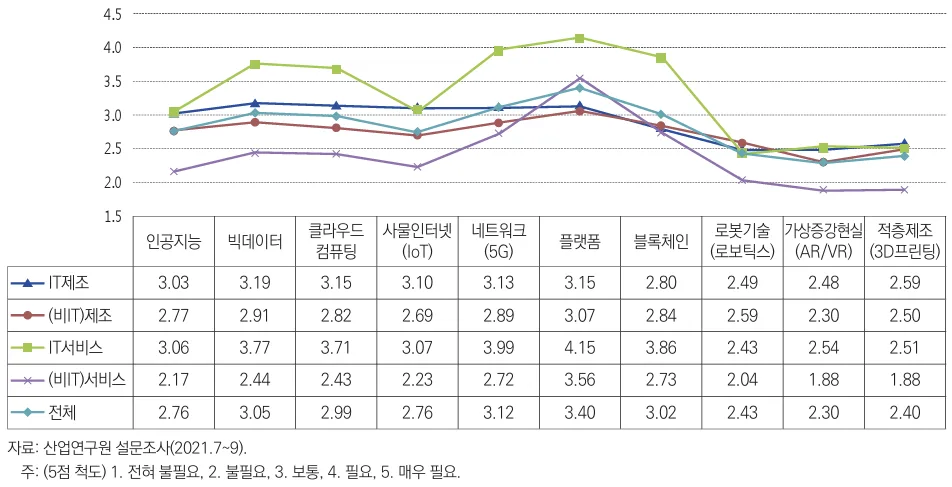
또한 HD현대인프라코어는 디지털 전환 로드맵을 바탕으로, 전통적인 제조 기업이 가진 한계와 위기에 선제적으로 대응하기 위해 3가지의 디지털 전략을 세웠다[31]. 첫 번째 디지털 전략은 비즈니스의 디지털화로 디지털 전환 또는 그기술을 이용한 새로운 신사업을 창출하는 것이다. 두 번째 디지털 전략은 Operation의 디지털화로 제품개발, 영업, 생산 등 Operation Level에서의 디지털전환을 통한 기존 사업의 운영 효율성을 높이는 것이다. 마지막, 일하는 방식의디지털화는 디지털 전환을 바탕으로 데이터에 기반한 의사결정을 내리는 문화를 전파하는 것이다.
[그림 9] HD현대인프라코어의 디지털 전략
(출처 : HD현대인프라코어 통합 보고서, 2020, p.61)
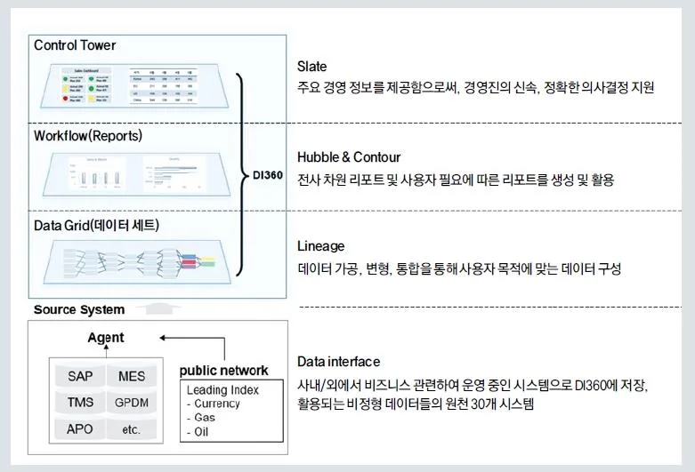
HD현대인프라코어의 비즈니스 디지털화는 장비의 전동화 및 미래 건설현장솔루션 구축 등을 통해서 진행되고 있다. 엔진 및 파워트레인 전동화 기술, 이기술을 활용한 친환경 전기 동력 건설장비 상용화가 비즈니스 디지털화의 하나의 축이다. 그리고 건설 현장 통합 관제 솔루션(All-in-One Smart Construction Solution), Mixed Fleet 관리 솔루션 같은 미래 건설 산업의 디지털 솔루션 상품화가 또다른 하나의 축이라 할 수 있다[31].
Operation의 디지털화는 데이터 기반의 의사결정 체계 확보를 목표로 이루어진다. 건설기계 시장은 경기에 민감하고, 변동성이 큰 시장이다. 이러한 시장에대응하기 위해서는 정확한 예측과 의사결정이 중요하다. 경험 중심의 과거의의사결정에서 벗어나 데이터 기반의 의사결정 체계로 나아가기 위해서 사내 정보의 디지털화 및 데이터 활용의 일상화가 필요하다[31]. 이를 위해 HD현대인프라코어는 데이터 수집과 관련된 과제들을 시작으로 데이터의 가시성을 확보하고, 데이터 기반의 협업 플랫폼을 구축하는 데에 집중하였다.
Business와 Operation의 디지털화를 위해서는 이러한 업무를 진행하는 임직원들의 일하는 방식의 변화도 중요하다. HD현대인프라코어의 일하는 방식의 디지털화는 디지털 업무 환경 조성, 디지털 업무 역량 강화 등을 중심으로 진행되
고 있다. 디지털 환경에서는 무엇보다 임직원의 디지털 기술에 대한 이해와 활용 능력이 강조되고 있으며, 이를 바탕으로 데이터 기반의 합리적인 의사결정을 통해 업무 효율을 극대화하는 것을 목표로 한다[31].
본 연구에서는 HD현대인파라코어의 Operation의 디지털화와 일하는 방식의디지털화에 초점을 맞추어, 빅데이터 플랫폼 구축과 활용의 성공 사례를 살펴보고자 한다.
3.2 빅데이터 플랫폼 선택
HD현대인프라코어의 디지털 전략의 핵심은 바로 디지털 전환에 있었다. 하지만 신속한 디지털 전환이 핵심인 상황에서 가장 큰 난관은 바로 Data Silo였다.
전사에 방대한 데이터가 쌓여 있었지만, 각 시스템에 있는 데이터가 서로 연결되지 못한 상황이었고, 데이터를 통한 의미 있는 인사이트 도출이 쉽지 않았다.
산업연구원에서 진행한 디지털 전환 기술 별 필요도 조사에 의하면 플랫폼이가장 높은 수치를 나타냈는데[7], HD현대인프라코어 역시 난관을 해결하기 위해가장 필요한 것은 이미 기 구축되어 있는 시스템의 데이터를 하나의 플랫폼으로 통합하여 구축하는 것이었다.
[그림 10] 디지털 전환 기술 별 필요도
(출처 : 심우중, 김종기, 2022, p.32)
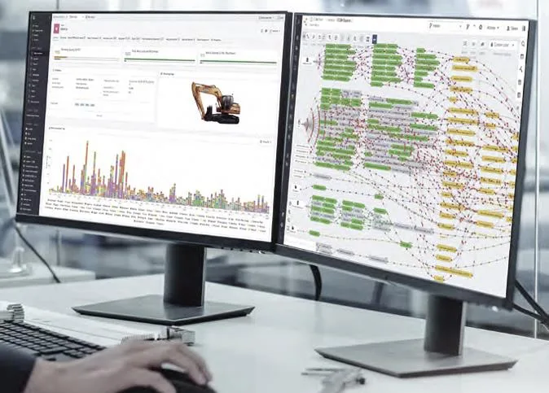
HD현대인프라코어는 2018년부터 빅데이터 플랫폼 구축을 위해 수십 개 회사와 접촉을 했으며, 이 중 팔란티어(Palantir)라는 회사를 최종 선택했다. 팔란티어는 2020년 9월 뉴욕증권거래소에 상장된 회사로, HD현대인프라코어와 파트너십을 체결할 당시인 2019년 만해도 미국에서 주목받는 유니콘 기업이었지만, 국내에서는 잘 알려지지 않은 낯선 외국 기업에 지나지 않았다. 하지만 팔란티어에서 제공하는 민간 기업용 플랫폼인 Foundry 시스템은 클라우드를 기반으로데이터를 수집, 변환, 결합하여 파이프라인(Pipeline)을 구축할 수 있을 뿐만 아니라, 분석 및 보고하는 과정까지 하나의 플랫폼에서 해결할 수 있는 서비스를제공하였다.
2018년 당시만 하여도 HD현대인프라코어가 수십년을 넘게 축적한 방대한 데이터를 다룰 수 있는 Data Lake를 구축할 수 있는 뛰어난 기술에 가진 업체는거의 전무하였다. 팔란티어는 HD현대인프라코어가 찾고 있던 기술을 보유하고있었지만, 낯선 스타트업이 만든 솔루션에 선뜻 투자를 하는 것은 쉽지 않은
결정이었다. 이에 HD현대인프라코어는 팔란티어의 사업 개발 담당 지사가 있던영국 런던에 방문하여, 플랫폼의 실체를 확인하기 위해 이를 이용하고 있는 기존 기업들의 Best Practice들을 직접 소개받았다. 소개받은 Best Practice 중에는에어버스(Airbus)의 빅데이터 플랫폼인 Skywise도 포함되었다[12]. 마침내 HD현대인프라코어는 디지털 전환을 위한 첫 발인 빅데이터 플랫폼을 구축하기 위해, 2019년 4월 팔란티어와 전략적 파트너십을 체결하여 디지털 혁신에 한층 속도를 높이게 된다[8].
3.3 빅데이터 플랫폼 구축
심우중, 김종기 (2022)의 연구에서는 기업이 처음부터 높은 수준과 완성도를목표로 디지털 전환을 추진하기보다 단계적인 디지털 전환 추진을 제시한다.
특히, 구매, 생산, 영업 등 우선적으로 필요한 Value Chain 단계에서 디지털 전환을 우선 추진하고 단계적으로 확대하는 것이 바람직하다[7]. 또한 한국산업기술진흥원 (2022)의 연구에 따르면, 디지털 전환의 전개 과정에서 내부 구성원들의기여나 역할을 검토하고, 이들이 디지털 전환에 직접 참여하게 함으로써 디지털 기술이 실제 현업에서 최적화된 형태로 적용되는 것을 유도할 수 있다고 한다[6].
HD현대인프라코어와 팔란티어는 파트너십 체결 후, 플랫폼이라는 광장 (Square)에 데이터를 모아 제곱(Square) 비례로 집단 지성을 발전시키자는 의미에서 Square라는 TF팀을 발족하였는데[12], Square TF팀이 가장 먼저 디지털 전환을 추진한 부문은 공급망 관리(SCM, Supply Chain Management)와 필드 클레임및 품질 관리(FCQM, Field Claim & Quality Management)였다. 이 때문에 HD현대인프라코어 측에서 Square TF팀에 참여한 인원은 사내 데이터 플랫폼 파트 인원과 SCM 및 품질 담당 전문가로 구성되었는데, 현업 전문가를 Square TF팀에 합류시킴으로써 현업의 니즈와 목소리가 잘 반영될 수 있도록 하였다. 2019년 SCM 및 FCQM 부문의 구축이 완성된 후에는 2020년에 구매, AM(After Market), R&D, 생산 부문의 구축이 순차적으로 진행되었고, 구축 범위에 맞춰 각 영역의 전문가가 투입되었다.
Data Silo를 해결하기 위해 빅데이터 플랫폼을 도입하는 프로젝트를 진행했지만, Square TF팀의 디지털 전환은 데이터가 아닌 의사결정에서 출발했다. 이러한방식을 팔란티어는 “Transformation Backwards”라고 부른다[9]. 어떤 의사결정을해야 하는지를 우선 파악함으로써 해결하고자 하는 비즈니스 문제가 무엇인지를 먼저 정의했다. 여러 문제를 정의한 후에는 비즈니스에 얼마나 큰 영향을주는지를 파악하여 우선순위를 정했다. 이렇게 우선순위까지 정해지면, 비로소의사결정에 필요한 데이터가 무엇인지를 정의하고, 어디에서 데이터를 확보할수 있는지를 파악했다.
데이터로 일을 할 수 있는 협업 플랫폼을 구성한다는 것은 회사 내 여러 조직과 소통하여 각 영역의 일하는 문화를 이해하고 데이터로 풀어내는 작업이었다. Square TF팀에 참여했던 한 직원의 인터뷰에 따르면, 팔란티어 직원들은 실제로 현업에서 어떤 방식으로 일을 하는지 관찰하는 데에 가장 많은 시간을 할애했다고 한다. Square TF팀은 업무에서 가장 중요하게 생각하는 과정이 어디인지를 찾아가며, 데이터를 어떻게 구성할지를 생각했다. 무엇을 근거로 의사결정을 하는지, 어떤 것이 의사결정의 핵심인지를 파악하고, 이를 바탕으로 데이터를 구성하며 확장하다 보면, 어느새 현업에서 일하는 방식을 반영한 데이터들의 연결이 이루어지게 되었다.
의사결정과 그 영향도, 그리고 필요한 데이터에 대한 질문에 대해 HD현대인프라코어의 현업 전문가가 답을 하면, 팔란티어 엔지니어들은 필요한 데이터가있는 원천 시스템을 팔란티어의 Foundry 시스템과 연결하여, 데이터 인터페이스 (Data Interface)를 구축했다. Foundry 시스템으로 연결된 데이터는 가공, 변형, 통합을 거쳐 의사결정에 필요한 최종의 데이터로 구성되었다. 이러한 데이터 파이프라인(Data Pipeline)을 Foundry 내에서는 Data Lineage로 부른다. Data Lineage를통해 만들어진 데이터를 이용하여 사용자는 목적에 맞는 리포트를 생성하고, 경영진의 신속한 의사결정을 위한 Dashboard 역시 만들 수 있게 된다. 이렇게팔란티어의 솔루션으로 구축된 HD현대인프라코어의 빅데이터 플랫폼은 Data Intelligence와 전방위를 의미하는 360가 합쳐져 “DI360”으로 명명되었고, 2020년에 전사에 오픈 되었다.
[그림 11] HD현대인프라코어 빅데이터 플랫폼(DI360) 요약도
(출처 : 배미정, 2021)
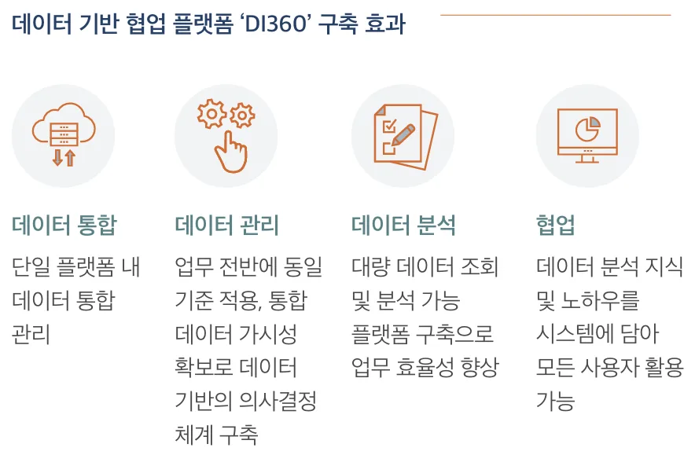
[그림 12] HD현대인프라코어 빅데이터 플랫폼 구현 이미지
(출처 : HD현대인프라코어 통합 보고서, 2020, p.65)
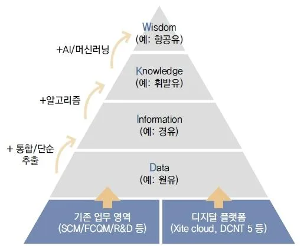
3.4 빅데이터 플랫폼 활용
Square TF팀은 플랫폼 구축 프로젝트를 완수 후 Data Intelligence팀으로 새롭게시작했다. Square TF팀에 이어 Data Intelligence팀에 소속되어, Change Management 를 담당했던 직원에 따르면, 빅데이터 플랫폼(이하 DI360)을 구축하는 것보다
더 어려웠던 점은 현업 부서에서 이를 배우고, 업무에 사용하게 하는 과정을진행하는 것이었다고 한다. 어떻게 직원들이 빠르게 DI360에 익숙해져서 실제로 데이터 기반의 의사결정을 하게 만들 수 있을지를 고민하던 Data Intelligence 팀은 매월 하루를 Training Day로 정해 교육을 진행했다. 누구든지 DI360에 대해배우고 싶어 하는 사람들에게 교육과 실습을 진행했는데, 많은 사람들의 참여를 유도하기 위해 실습 주제는 매번 다른 영역의 데이터를 사용하였다. 또한이미 Square TF팀에서 구축한 다양한 리포트와 Dashboard를 같이 만들어 봄으로써 결코 플랫폼 사용이 어렵지 않음을 환기시켜주려고 했다.
DI360을 사용해 본 HD현대인프라코어 직원들은 크게 3가지의 장점을 꼽았
다. 먼저 DI360을 통해 보고서 작성 시간을 상당히 줄일 수 있었다. 그동안 보고서를 작성하기 위해 구매, 생산, 영업 등 영역별 시스템마다 로그인을 해서데이터를 취합해야 했던 비효율이 획기적으로 줄었다. 예를 들어 DI360에서는한 장비의 일련 번호만 알고 있으면, 그 장비의 생산 정보 및 판매 정보, 그리고 고객의 사용 정보까지 하나의 플랫폼에서 확인할 수 있다. 두번째로 한 번보고서를 작성하면 자동으로 데이터가 실시간 업데이트가 되어, 데이터를 이용해 만든 리포트 역시 실시간으로 최신 정보를 담을 수 있었다. DI360에 한 번로직을 세팅해 놓으면 자동으로 리포트가 업데이트 되기 때문에 추가 작업을할 필요가 없는 점에서 매우 편리하다. 마지막으로 손쉬운 데이터 분석을 할수 있다는 강점이 있다. 데이터를 가공해서 분석하고 시각화 하는 데도 여러프로그램을 활용해야 하면서 많은 공수가 들었는데, DI360에는 필요한 데이터가모두 모여 있을 뿐만 아니라 다양한 종류의 데이터를 시각화 할 수 있는 툴을보유하고 있어, 누구든지 데이터를 활용해 인사이트를 담은 분석 리포트를 만들 수 있다[12]. 만들어진 시스템이 직원들에게 이점을 제공하지 않는다면 그시스템은 성공할 수 없는데[19], DI360은 직원들에게 충분한 이점을 제공하고있다.
[그림 13] HD현대인프라코어 빅데이터 플랫폼 도입 효과
(출처 : HD현대인프라코어 통합 보고서, 2019, p.59)
DI360을 구축하고, 운영하는 Data Intelligence팀은 DI360의 비전을 [그림 14]와같이 표현한다. 각 업무 영역을 데이터(Data)를 DI360에 연결하여, 단순 추출 또는 통합을 통해 정보(Information)을 만들고, 현업의 노하우를 반영한 알고리즘을통해 지식(Knowledge)이 되도록 한다. 또한 종국에는 AI나 머신러닝을 통해 사전 예측 및 진단을 할 수 있는 지혜(Wisdom)를 구축하는 것을 목표로 한다. 이미 Data Intelligence팀은 DI360에 AI 툴을 접목하는 프로젝트들을 진행 중이다.
[그림 14] HD현대인프라코어 빅데이터 플랫폼의 비전
(출처 : 배미정, 2021)
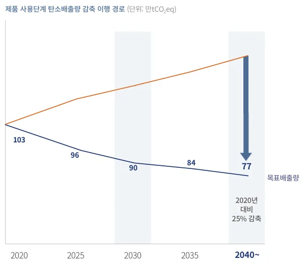
3.5 Best Practice 사례
DI360을 이용한 다양한 Best Practice 사례가 나왔지만, 본 절에서는 이 중 두가지 사례를 소개하고자 한다. 첫 번째 사례는 DI360에 담긴 장비의 Tele- Management System(이하 TMS) 데이터를 이용해 필드에 있는 고객 장비의 사용모드를 분석해서, 신제품 개발에 이용한 사례이다. 분석 결과 같은 모델의 장비이지만, 한국 고객들은 연료 사용량에 민감하여 다른 지역들에 비해 장비의 최고 출력 모드 사용 비율이 현저히 낮다는 점, 유럽과 미국은 모드별 가동 비율이 유사하지만, 유럽은 엔진 스피드를 낮추어 사용하는 반면, 미국 고객은 설정한 최대 엔진 스피드에서 사용하며, 힘과 속도를 중요시한다는 점을 발견할 수있었다. HD현대인프라코어는 이러한 분석 결과를 신제품 개발에 반영하려고 했다.
이 중 특별한 사례가 발견되었는데, HD현대인프라코어가 유럽 지역에 판매한 21톤 휠굴착기의 절반 가량이 프랑스 북동부 지역 사탕무(Sugar Beet) 작업장에서 가동 중에 있다는 사실을 GPS 정보를 통해 확인할 수 있었다. TMS 데이터를 분석한 결과 최고 출력 모드 사용 비율이 50%에 육박함을 확인할 수 있었고, 필드 서베이(Field Survey)를 통해 직접 현장 확인을 한 결과, 작업 환경이매우 가혹하다(Severe)는 것을 알 수 있었다. 이에 차기 유럽향 21톤 휠굴착기는표준 출력 모드가 아닌, 최고 출력 모드의 성능 개선에 초점을 맞춰 개발되었고[13], 최고 출력 모드의 사용이 높은 만큼 장비를 구조적으로 많이 보강하였다.
[그림 15] 빅데이터 분석을 통해 개발된 유럽향 21톤 휠굴착기
(출처 : HD현대인프라코어 뉴스&미디어, 2022)
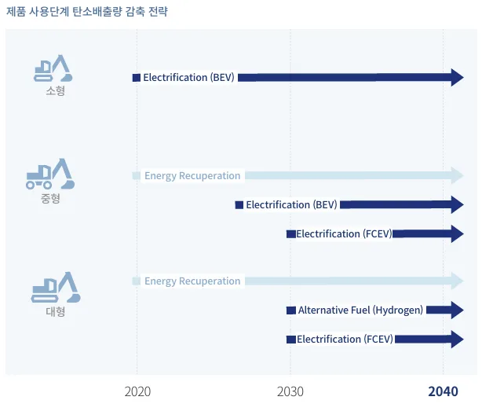
두 번째 사례는 제품 사용에서 발생하는 연간 탄소 배출량을 산정해서, 미래탄소 배출량 예상 시나리오를 보여주고, 기술 로드맵(Technology Roadmap, 이하 TRM)을 점검할 수 있게 한 사례이다. 건설기계 사업 Value Chain의 총 탄소 배출량 중 제품 사용 단계에서 발생하는 탄소 배출량은 87.5%를 차지한다[32]. 이때문에 탄소 중립 달성을 위해서는 제품 사용 단계에서 탄소 배출을 줄이는 것이 핵심이었고, 어떤 제품군에서 탄소가 많이 발생하는지를 확인할 필요가 있었다.
이에 DI360의 데이터를 이용하여, 미래 탄소 배출량을 예상해서 보여주는 과제가 수행되었다. 판매된 장비 대수를 확인하기 위해 SCM 데이터, 필드 장비의연료 사용량을 확인하기 위해서는 TMS 데이터가 활용이 되었다. 분석 결과, 제품 사용 단계 탄소 배출량은 판매 비중이 높은 굴착기 중형 기종과 판매량은많지 않지만 연료 소모량이 높은 굴착기 대형 기종에서 배출 비중이 높다는 사실을 발견했다. 이에 따라 제품 사용단계의 탄소 배출 저감은 굴착기 중대형기종의 탄소 배출 저감을 위한 기술 개발을 중심으로 검토가 되었고, TRM이 수
립되었다.
[그림 16] DI360에서 분석한 탄소 배출량 산정 결과 이미지
(출처 : HD현대인프라코어 통합 보고서, 2022, p.31)
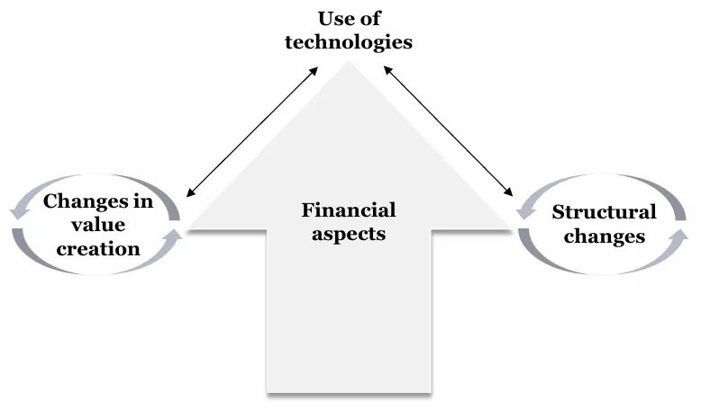
[그림 17] 제품 사용 단계 탄소 배출량 감축 전략
(출처 : HD현대인프라코어 통합 보고서, 2022, p.31)
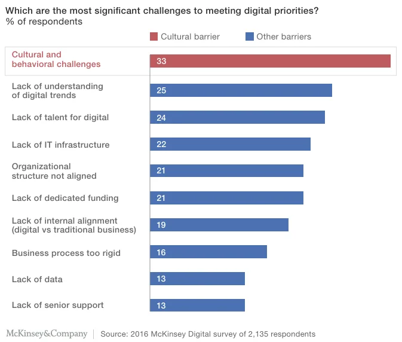
제 4 장 HD현대인프라코어의 디지털 전환 성공 요인
HD현대인프라코어의 디지털 전환 성공에는 뛰어난 기술을 지닌 팔란티어社 와의 협력이 있었지만, 기술적인 측면 뿐만 아니라 무엇보다도 조직, 문화, 인재 측면에서 디지털 전환을 추진했다는 점이 주요했다. 본 장에서는 특히 어떤요인들이 성공에 기여했는지를 살펴보고자 한다.
4.1 강력한 리더십
Kane (2019)의 연구에서 진행된 조사에서 디지털 전환의 성공 요소로 리더십
이 두번째를 차지했으며, 응답자의 50% 이상이 디지털 시대에 새로운 리더십이필요하다고 응답했다. Kane에 따르면 기업들은 누가 디지털 진보를 이끌 것인지를 생각해야 한다고 한다. 보통은 IT 부문에서 디지털 전환을 리드하지만, 궁극적으로 디지털 전환은 C-Level에서 이끌어야 하며, 디지털 리더십의 상대적 지위가 결국 디지털 진화의 정도를 반영한다고 말한다[18].
HD현대인프라코어의 디지털 전환에서는 강력한 리더십이 작용했다는 사실을확인할 수 있다. HD현대인프라코어는 별도의 CDO(Chief Digital Officer) 포지션을가지고 있지 않고, 당시 CEO였던 손동연 사장에 의해서 직접 디지털 전환 추진이 이루어졌고, 담당은 전략&Digital 부문장이 맡았다. 전략&Digital 부문장은당시 회장이었던 박용만 회장의 아들로, 덕분에 디지털 전환 추진은 강력한 서포트를 받았다. 국내에 잘 알려지지 않았던 팔란티어社를 파트너로 채택한 것도 이러한 리더십을 바탕으로 이루어진 것이다. Vogelsang et al. (2018)의 연구에서는 “Management Support”는 디지털 전환에 필수적인 요소라고 말한다[19]. 디지털 전환 전략은 기업 전반에 영향을 미치고, 실행 과정에서 저항을 불러일으킬 수 있다. 이러한 저항을 이겨내고 성공적인 디지털 전환을 위해서는 Top Management의 지지가 반드시 필요한 것이다[17].
손동연 CEO는 디지털 전환 추진과 관련된 업무에 직접 보고 받는 것 뿐만이아니라, DI360 오픈 후 각 부문 임원들에게 조직 내 디지털 전환 과제를 찾아서실행하라고 먼저 지시를 하며, 디지털 업무 환경에서 일하는 조직이 되도록 강하게 요구하였다. 각 부문의 디지털 전환 과제를 수행한 현업 담당자들이 CEO 를 비롯한 모든 임원진 앞에서 과제 결과 발표를 진행하게 했으며, 과제와 관련된 질문은 현업 담당자만이 아니라, 담당 조직 임원이 직접 답하도록 하였다.
이를 통해 자연스럽게 각 조직의 리더들이 디지털 전환에 적극 힘을 쏟도록 유도했다. Kane (2019)에 의하면 디지털 전환은 높은 집중을 요하는데, 특히 임원들이 디지털 전환을 달성하기 위해 시간, 에너지, 자원을 쏟아야 한다. 본연의사업을 진행하면서 디지털 혁신을 이루는 것은 쉽지 않지만, 시간과 자원을 쏟지 않고는 디지털 전환은 일어나기 쉽지 않다[18].
Matt, Hess, and Benlian (2015)의 연구에서는 디지털 전환 전략의 4가지 Dimension을 언급했는데, 이 4가지는 “Use of Technology”, “Changes in Value Creation”, “Structural Changes”, “Financial Aspects”이다. 특히 Financial Aspects가 선행되어야 나머지 3가지 Dimension이 실행될 수 있다[17]. 투자와 관련해서도 HD현대인프라코어의 강력한 Management Support가 빛이 났다. 강력한 리더십덕분에 80억이라는 과감한 투자를 단행할 수 있었고, 디지털 전환에 힘을 쏟을수 있었다고 볼 수 있다.
[그림 18] 디지털 전환 프레임워크(Framework)
(출처 : Christian Matt, Thomas Hess, and Alexander Benlian, 2015, p.341)
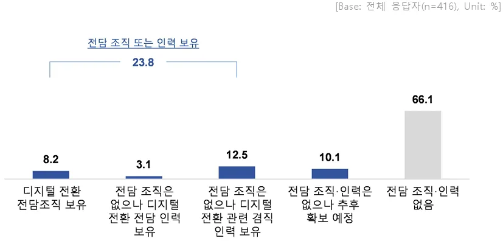
4.2 조직 문화의 변화
McKinsey의 한 조사에 따르면 디지털 시대에서의 성공을 가로막는 가장 큰장애물로 조직 문화가 꼽혔다[22]. 이는 디지털 시대에 걸맞은 조직 문화를 생성하지 못하면, 온전한 디지털 전환을 완수할 수 없다는 의미이기도 하다. Kane (2019)에 따르면 디지털 조직은 문화에서 시작되고, 디지털적으로 성숙한 기업들은 문화의 변화를 이끄는데 더 많은 시간을 사용한다. 실제로 그의 연구 조사에서 디지털적으로 성숙한 기업은 80%가 문화의 변화를 위해 적극적으로 활
동하고 있다고 답했으며, 디지털적으로 Early-Stage에 있는 기업은 23%만 그렇게 하고 있다고 답했다. 또한 디지털적으로 성숙한 기업들은 문화의 변화를 위해 더 많은 투자를 하는 것으로 나타났다[18]. HD현대인프라코어는 디지털 전환방향성의 정점에 일하는 방식 및 문화의 혁신을 설정할 만큼 디지털 시대로의변화에 맞춰 조직 문화를 개선하기 위해 많은 노력을 기울였다[30].
[그림 19] 디지털 시대의 성공을 가로막는 장애물에 대한 조사 결과
(출처 : Julie Goran, Laura LaBerge, and Ramesh Srinivasan, 2017, p.2)
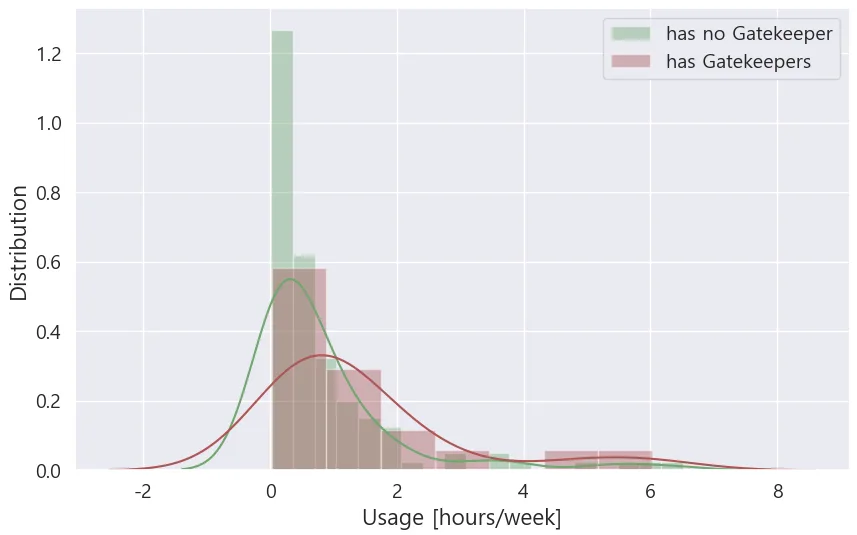
HD현대인프라코어는 팔란티어와의 협업을 통해 애자일(Agile)한 팔란티어의업무 문화에 동화되어 갔다. 정의해야 할 비즈니스 의사결정과 이슈에 대한 답을 HD현대인프라코어가 알려주면, 팔란티어 엔지니어들은 작은 데이터셋
(Dataset)으로부터 데이터 파이프라인(Data Pipeline)과 워크 플로우(Work Flow)를구축해서, 이를 빠르게 검증했다. HD현대인프라코어가 구축된 워크 플로우를 테스트해서 피드백을 하면, 다시 팔란티어가 이를 반영하여 빠르게 수정해 나갔고, 이 과정을 반복하며 과제를 스케일업(Scale-up) 했다[12]. 해당 프로세스는 Lean Startup의 Build-Measure-Learn Feedback Loop 과정과 흡사하며, 이러한 협업이 이루어지며 HD현대인프라코어는 스타트업이 가진 애자일한 업무 방식을 배우게 된 것이다.
애자일 업무 문화는 팔란티어와의 프로젝트가 끝난 후에도 지속되었다. 강력한 리더십에 의해 각 부문의 디지털 전환 과제가 진행되었는데, 현업 담당자들과 롤아웃(Roll-out) 과제를 수행할 때에도 업무 문화가 똑같이 전파되어, 조직전체가 애자일한 업무 문화를 배워 나갈 수 있었다. 또한 디지털 혁신을 통해데이터 기반의 빠른 의사결정이 가능해진 점 역시 애자일 업무 문화를 가속화하는데 크게 작용했다. 문화 변화는 기업에서 디지털 비즈니스 수용을 촉진하며[18], 조직이 변화에 민첩하게 반응할 수록 디지털 전환이 성공할 가능성이높다[19]. HD현대인프라코어는 조직 문화 변화를 유도하면서 데이터 기반의 의사결정과 운영 혁신을 통해, 변화에 민첩하게 대응 가능한 기업 역량까지 확보할 수 있었다.
4.3 전담 조직 보유
산업통상자원부와 한국중견기업연합회의 조사에 따르면 디지털 전환 추진을위한 조직을 보유한 기업 비율은 8.2% 밖에 그치지 않았으며, 전담 조직을 비롯해 인력조차 없다는 응답이 76.2%에 달했다[5]. HD현대인프라코어의 디지털전환 성공의 중심에는 이를 전담했던 Data Intelligence팀이 있다. 팔란티어와의협업이 완료된 후, DI360이 오픈 되면서 Square TF팀이 정식 팀인 Data Intelligence팀으로 전환되었다. Data Intelligence팀은 DI360 플랫폼을 운영하면서도, 전사의 업무 방식과 문화 변화를 이끄는 Change Management를 담당하는 역할을 수행했다.
[그림 20] 중견기업의 디지털 전환 추진 부서(팀) 보유 여부
(출처 : 산업통상자원부, 한국중견기업연합회, 2021, p.69)
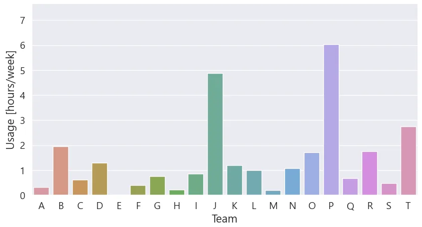
Data Intelligence팀은 디지털 시대가 도래함에 따라 직원들이 이에 순조롭게적응하여 일할 수 있도록 DI360을 적극적으로 홍보하며, 매월 하루를 온전히교육을 하는 Training Day를 열었다. 하지만 Data Intelligence팀은 교육 진행 활동에만 그치지 않고, 교육에서 준수한 디지털 역량을 보인 각 조직의 Power User 들에게 적극적으로 컨택(Contact)하여 각 조직이 데이터 기반의 의사결정을 할수 있는 과제를 발굴할 수 있도록 많은 지원을 하였다.
CEO의 강력한 리더십을 등에 업고, Data Intelligence팀은 2021년에 Data-Driven Decision Company, 일명 “DDD Company” 캠페인을 진행했다. 각 조직 리더의 지도하에 DI360을 이용한 데이터 기반 의사결정 과제를 찾아 전사 공유회를 개최하는 행사를 열었다. 특히 공유회는 온라인으로 진행되어, 100명이 넘는 인원이참석하여 디지털 전환 과제 결과를 공유 받을 수 있도록 했으며, CEO를 비롯한모든 임원이 참석하였다. 1년 간 총 24개의 Pilot 과제가 진행되었고, 이 중 Best
Practice 사례 6건에 대해서는 포상을 진행했다. DDD Company 행사 덕분에 많은사내 인원이 DI360에 대해 관심을 가지게 되었으며, 이후 월 평균 DI360 사용시간이 2020년 767시간에서 2022년 1,364시간으로 크게 증가하였고, 월 평균 사용자수 역시 2020년 163명에서 2022년 325명으로 두 배로 증가했다. 이처럼 Data Intelligence팀은 전사의 디지털 전환을 전담하며, 업무 방식과 문화 변화를이끄는데 큰 역할을 하고 있다.
4.4 Data Agent 양성 (Gatekeeper 양성)
최근 기업 현장에서는 Citizen Data Scientist 양성에 대한 논의가 활발하게 이루어지고 있다. Citizen Data Scientist는 Gartner에 의해서 소개된 개념으로, 주된직무가 통계 및 분석 분야가 아니지만 고급 분석이나 예측 모델을 생성을 할수 있는 사람을 의미한다[34]. HD현대인프라코어는 Citizen Data Scientist라는 용어 대신 Data Agent라는 용어를 썼는데, 이들은 혁신 연구에서의 Gatekeeper와동일한 역할을 수행했다.
Data Intelligence팀은 DDD Company 캠페인을 이끌면서, 총 24개의 Pilot 과제를 진행하며 24명의 Data Agent를 양성했다[12]. Data Agent 양성의 목적은 먼저 Data Intelligence팀이 팔란티어로부터 배운 애자일 업무 방식과 문화를 이들에게전파시키는데 있었다. Data Agent들이 직접 현업의 문제를 도출하고, 데이터 기반의 의사결정을 하기 위해 DI360을 잘 활용할 수 있는 역량을 키울 수 있도록 Data Intelligence팀이 1년 간 집중 지원을 했다. 과제를 수행할 수 있는 역량을 Data Agent가 겸비할 수 있도록 Basic 1 & 2 및 Advance 교육이 소수 정예로 이루어졌다.
Data Agent 양성은 이들을 단순히 양성하는 데에만 목적을 두지 않았다. Data Agent들이 직접 DI360을 활용해서 과제를 수행한 경험을 각 팀으로 전파하는역할을 수행시켰다. 각 현업 팀의 인원이 동료인 Data Agent의 디지털 전환 성공 사례를 직접 체험함으로써 이러한 업무 방식과 문화가 확산되기를 의도했다. Data Intelligence팀이 디지털 전환 추진을 전담하고 전사적으로 교육을 진행했지만, 모든 직원이 DI360을 능숙하게 활용할 수 있도록 집중 교육시키는 것은 굉장히 어려운 일이었고, 이를 위해서는 상당히 긴 시간이 투입되어야 했다.
이를 해결하기 위한 최선의 방안이 바로 Data Agent를 양성하는 것이었다.
Data Agent 양성은 Gatekeeper의 양성과 일맥 상통한다. Data Intelligence팀은 외부로부터 디지털 기술과 혁신, 그리고 업무 방식과 문화를 인지하고, 이를 흡수하는 역할을 했다. Data Intelligence팀 자체가 바로 외부와 조직 사이의 Gatekeeper로서 역할을 수행한 셈이다. 또한 Data Intelligence팀은 Data Agent를 양성해서 이들을 조직의 하위 단위 간 또는 하위 단위 내 지식과 문화를 전파하는 Gatekeeper의 역할을 하도록 한 것이다. Data Agent들은 Gatekeeper로서 이들이전수받은 것들을 조직 내 다른 구성원들이 더 쉽게 배우고, 활용할 수 있도록전파했다. Thomas J. Allen (1970)의 이론에 따라 Gatekeeper Network를 통해 정보가 다른 Gatekeeper에게로 전달되었고, 각 Gatekeeper로부터 조직의 다른 구성원에게 전파된 것이다. HD현대인프라코어는 팔란티어로부터 배운 애자일 업무 방식과 데이터 기반의 의사결정 문화를 Data Intelligence팀에 이어 Data Agent, 궁극적으로 전 직원으로 확산시키고자 했으며, 이 전략은 HD현대인프라코어가 디지털 전환에 성공하는데 큰 기여를 했다.
제 5 장 Gatekeeper가 디지털 전환에 미치는 영향
본 장에서는 HD현대인프라코어의 디지털 전환 성공에 큰 기여를 한 Data Agent, 즉 Gatekeeper에 대해서 조금 더 자세히 다루고자 한다. Data Agent는 Gatekeeper로서 팀원에게 디지털 기술과 문화를 전파하는 역할을 한다. 이를 통해 Data Agent(이하 Gatekeeper)는 팀원의 DI360 사용 시간에 영향을 미치게 된다.
2021년 DDD Company 캠페인을 통해서 24명의 Gatekeeper가 양성되었고, 2022 년의 팀별 DI360 사용 현황을 조사한 결과, [그림 21]에서 보듯이 Gatekeeper를보유한 팀에 소속된 팀원의 주간 평균 DI360 사용 시간은 그렇지 않은 팀원의사용 시간에 비해 더 높게 분포하는 것을 알 수 있다. Gatekeeper 보유 유무에따른 두 집단의 주간 평균 DI360 사용 시간은 유의미한 차이를 보인다(t = 1.847, P-value = 0.033, 두 집단이 동일 분산을 가진다고 가정). 하지만 [그림 22] 와 같이 Gatekeeper를 양성한 팀 사이에서도 팀원의 주간 평균 DI360 사용 시간에 차이를 보였다. 이에 어떠한 요인이 이러한 결과 차이를 만들어 냈는지 분석하고자 한다.
[그림 21] Gatekeeper 보유 유무에 따른 팀원의 주간 평균 DI360 사용 시간 분포
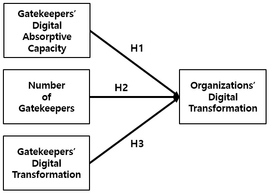
(본인 작성)
[그림 22] Gatekeeper를 보유한 팀의 주간 평균 DI360 사용 시간 (본인 작성)
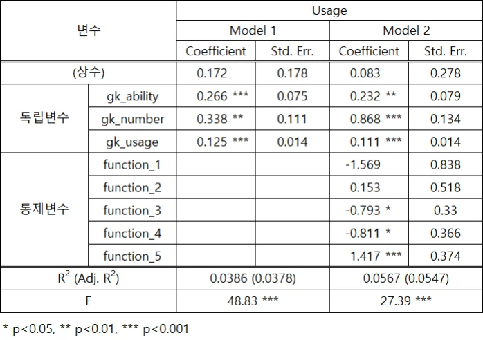
5.1 연구 가설
앞선 이론적 배경에서 언급한 바와 같이 Gatekeeper들의 IT 사용에 대한 새로운 지식의 가치를 인식하고 흡수하는 능력이 더 높을수록, 비즈니스 운영에 IT 사용을 더 잘 적용할 수 있다[26]. 본 연구에서는 디지털 전환을 위한 IT 사용에 대한 흡수역량을 “디지털 흡수역량(Digital Absorptive Capacity)”이라고 정의하고자 한다.
HD현대인프라코어 사례에서는 24명의 Gatekeeper를 동일한 교육 과정을 통해육성했지만, 양성한 모든 Gatekeeper가 동일한 디지털 기술의 활용 능력을 가진것은 아니었다. Gatekeeper마다 디지털 흡수역량의 차이를 보였고, Gatekeeper가 1 년 간 수행한 과제의 산출물 역시 이들이 가진 역량에 따라 수준 차이를 보였다. 디지털 전환을 위한 IT 사용에 대한 흡수역량이 높을수록 효과적으로 데이터 기반의 의사결정이 가능한 높은 수준의 산출물을 만들어낸 것이다.
Gatekeeper가 생성한 산출물이 현업의 의사결정 과정에서 효과적일수록 이 산출
물이 현업의 직원들에 의해서 사용될 가능성이 높고, DI360의 사용 시간이 늘어나게 된다.
Cohen and Levinthal (1990)의 연구에 따르면 조직의 흡수역량은 Gatekeeper의능력 뿐만 아니라, Gatekeeper로부터 정보를 전달받는 개인들의 전문 지식에도영향을 받는다[25]. Gatekeeper는 팀 내에서 DI360 활용 지식과 일하는 문화를전파하는 역할을 맡은 만큼 이들의 디지털 흡수역량이 높을수록 디지털 전환을위한 IT 사용에 대한 지식과 데이터 기반의 업무 문화 전파가 더 활발히 이루어졌을 것이고, 이는 팀원들의 IT 사용에 대한 지식 뿐만 아니라 DI360 사용시간에 영향을 미쳤을 것이다. 팀원들의 DI360 활용 시간이 높다는 것은 그만큼 해당 팀의 디지털 전환 수준이 높아졌다는 것을 의미한다. 이를 바탕으로아래와 같은 가설을 설정할 수 있다.
H1 : Gatekeeper의 디지털 흡수역량은 조직원의 디지털 전환 수준과 양의 상관관계를 가진다.
Jiebing Wu and Mengzhou Xu (2013)는 기술 중개인(Technology Intermediaries)과지역 혁신 성과(Regional Innovation Performance)의 관계에 대한 연구를 진행했다. 해당 연구에서 기술 중개인은 연구개발의 공급과 수요 간의 Interface를 최적화하는 미션을 가진 기간이나 조직을 가리킨다. 이들은 혁신 중개인으로서 Gatekeeper의 역할을 수행한다. 연구 결과에 따르면 지역 내 더 많은 기술 중개인을 가질수록 더 높은 혁신 성과가 창출된다[35].
HD현대인프라코어의 사례에서도 위와 같은 내용을 적용할 수 있다. 팀 내에 Gatekeeper의 수가 많을수록 팀 내의 디지털 활용 지식과 문화 전파가 더 활발히 이루어졌을 것이고, DI360의 활용도도 더 높을 것이다. 즉, 다음과 같은 가설을 설정할 수 있다.
H2 : Gatekeeper의 수와 조직원의 디지털 전환 수준은 양의 상관관계를 가진다.
Gatekeeper가 DI360을 활발히 사용한다는 것은 업무 방식의 변화가 원활하게이루어지고 있다는 것을 의미한다. Gatekeeper들은 DI360을 이용해서 지속적인과제 발굴을 통해 업무 방식의 변화를 꾀하고 있고, 팀원들에게 이를 전파하고있다. Gatekeeper의 DI360 활용도가 높을수록 팀원의 DI360 활용도가 높을 것이라는 것을 짐작할 수 있다. 이에 마지막 가설을 다음과 같이 설정할 수 있다.
H3 : Gatekeeper의 디지털 전환 수준은 조직원의 디지털 전환 수준과 양의 상관관계를 가진다.
논의된 세 가지 가설을 종합한 연구 모형은 [그림 23]와 같다.
[그림 23] 연구 모형 (본인 작성)
5.2 연구 방법
본 연구에서는 2021년 Gatekeeper를 양성한 이후 각 Gatekeeper가 조직에 미치는 영향을 살펴보기 위해 Gatekeeper를 보유한 이력이 있는 20개의 팀의 2022년
DI360 사용 시간 데이터를 사용하였다. 20개의 팀에 속한 조직원들의 일별 사용시간을 주간 단위로 합산(Aggregation)하여서, 각 조직원의 주간 DI360 사용 시간을 종속변수로 선정하였다. 연구 모형에 따라 독립변수는 Gatekeeper의 역량, Gatekeeper의 수, Gatekeeper의 주간 DI360 사용 시간으로 선정하였고, 통제변수는 각 팀의 Function을 설정했다.
Gatekeeper의 역량은 이산형 데이터로, DDD Company 캠페인 활동을 하면서 1 년 간 진행된 과제에 대한 평가 결과에 따라 각 Gatekeeper의 역량을 1, 2, 3으로지정하였으며, 숫자가 높을수록 높은 역량을 나타낸다. 과제 수행 평가에서 Best Practice 상을 수상한 6명에게는 3, 우수상을 수상한 6명에게는 2, 나머지인원에 대해서는 1을 부여하였다. Gatekeeper의 수 역시 이산형 데이터로 팀 내에 존재하는 Gatekeeper의 수를 나타낸다. Gatekeeper가 조직 변경에 따라 팀 이동을 하는 경우가 발생하였고, 데이터에서 Gatekeeper의 수는 0에서 3 사이의값을 가진다.
통제변수인 각 팀의 Function은 범주형 데이터로 크게 R&D, 영업, 생산, 품질, 구매, 그리고 나머지 Staff 조직으로 구분하였고, 0에서 5 사이의 값을 가진다. R&D 조직에 속하는 팀은 0, 구매 조직에 속하는 팀은 1, Staff 조직은 2, 영업 조직은 3, 품질 조직은 4, 생산 조직은 5를 지정하였으며, 숫자가 높을수록조직의 DI360 사용 시간이 높다.
분석은 Stata 통계 프로그램을 사용하여 다중회귀분석을 진행했으며, 통제변수인 팀의 Function은 Dummy 변수로 처리하였다.
변수 Symbol 데이터 속성 Value
팀원의 주간 DI360 사용 시간 usage 연속형 0 ~ 52
팀 내 Gatekeeper의 역량 gk_ability 이산형 0~3
팀 내 Gatekeeper의 수 gk_number 이산형 0~3
팀 내 Gatekeeper의 주간 DI360 사용 시간 gk_usage 연속형 0 ~ 52 팀의 Function function 범주형 0~5
[표 4] 분석에 사용한 변수 속성
5.3 연구 결과
[표 5]는 조직원의 주간 DI360 사용 시간, 즉 조직의 디지털 전환 수준에 영
향을 미치는 요인에 대한 분석 결과이다. Model 1은 세 가지 독립변수만을 포함한 모델이며, Model 2는 통제변수도 포함한 모델이다.
두 모델 모두 독립변수인 Gatekeeper의 역량, Gatekeeper의 수, Gatekeeper의 Data Platform 사용 시간이 종속변수인 조직원의 Data Platform 사용 시간에 미치는 영향이 통계적으로 유의한 것으로 나타났다. 먼저 팀내 Gatekeeper의 디지털흡수역량이 높을수록 팀원의 DI360 사용 시간이 높은 것으로 나타났고, 이는 Gatekeeper의 디지털 흡수역량이 높을수록 조직원의 디지털 전환 수준이 높다는것을 의미하므로, 가설 H1을 지지한다. 마찬가지로, 팀 내 Gatekeeper의 수가 많을수록 팀원의 DI360 사용 시간이 높은 것으로 나타났고, 가설 H2를 지지한다.
마지막으로 Gatekeeper의 DI360 사용 시간과 팀원의 DI360 사용 시간이 양의 상관관계를 가지는 것으로 나타나, 가설 H3를 지지한다. 종합적으로 모델에서 설정한 세 독립변수가 종속변수와 양의 상관관계를 가지는 것으로 나타나, 위에서 설정한 세 가지 가설을 모두 지지하는 것을 확인할 수 있었다.
세 독립변수가 종속변수에 미치는 영향도의 정도, 즉 Coefficient가 두 가지모델에서 동일한 경향으로 나타났으며, Gatekeeper의 수, Gatekeeper의 흡수역량, Gatekeeper의 디지털 전환 수준 순으로 영향을 크게 미친다는 것을 확인할 수있다.
[표 5] 다중회귀분석 결과
Gatekeeper를 보유한 팀 간에 Data Platform 사용 시간에서 차이가 나고 있으며, 팀 내 Gatekeeper의 수, Gatekeeper의 흡수역량, Gatekeeper의 Data Platform 사용 시간이 팀원의 Data Platform 사용 시간에 유의미한 양의 관계를 가지는 것으로 보아, Gatekeeper가 팀(조직)간 Data Platform 사용 시간 차이, 즉 디지털 전환수준에 영향을 미치고 있다고 볼 수 있다.
제 6 장 결론 및 시사점
6.1 결론
디지털 전환의 성공 요인은 크게 기술적 요인, 조직적 요인, 환경적 요인으로분류할 수 있는데[19, 36], HD현대인프라코어의 디지털 전환 성공 사례 연구에서는 조직적 요인이 디지털 전환에 있어 주효한 것으로 나타났다. HD현대인프라
코어 사례에서 나타난 조직적 요인은 강력한 리더십, 조직 문화 변화, 전담 조직 보유, Gatekeeper 양성이 있다. 특히 Gatekeeper 양성을 통해 애자일 업무 방식과 데이터 기반의 의사결정 문화를 전 직원으로 확산하도록 한 전략이 디지털 전환 성공에 큰 기여를 했다.
Gatekeeper 양성 이후 Gatekeeper를 보유한 팀이 그렇지 않은 팀에 비해서 Data Platform의 사용 시간이 유의미하게 높은 것으로 나타나서, Gatekeeper가 조직의 디지털 전환에 영향을 미쳤다는 점을 정량적으로 확인할 수 있었다. 하지만 Gatekeeper를 보유한 팀(조직) 사이에서도 Data Platform 사용 시간에 큰 차이를 보였고, 통계 분석을 통해 팀 내 Gatekeeper의 흡수역량, Gatekeeper의 수, Gatekeeper의 Data Platform 사용 시간이 팀원의 Data Platform 사용 시간과 유의미한 양의 관계를 가진다는 사실을 밝혀냈다. 이를 통해 Gatekeeper가 팀간 IT 사용의 차이에 영향을 미치고 있다는 것을 알 수 있으며, 조직에서의 IT 사용은 Gatekeeper에 의해 주도된다는 선행 연구 결과와 부합한다[26].
6.2 시사점
정성적 사례 연구와 정량적 통계 분석을 통해서 디지털 전환을 준비하는 제조 기업을 위한 세 가지의 시사점을 도출할 수 있었다. 첫째, 디지털 전환에 있어 조직적 요인들을 중요시해야 한다. 이미 많은 선행 연구에서 기술적 요인만으로는 디지털 전환의 이점을 온전히 누릴 수 없으며 조직적 측면의 요인들이중요하다는 연구 결과를 소개하고 있고[19], 이는 HD현대인프라코어 사례에서도 확인이 되었다.
디지털 전환의 여정에 있어 우선 디지털 리더십을 확보하는 것이 중요하다.
HD현대인프라코어에서는 CEO가 직접 디지털 전환을 이끌었는데, 디지털 리더십의 지위가 디지털 진화 정도를 반영하는 좋은 사례로서, 디지털 전환을 준비하는 기업들은 디지털 리더십의 중요성을 인지하고, CEO나 CDO와 같은 C- Level에서 디지털 전환을 이끌도록 해야 한다.
또한 리더십과 더불어 디지털 전환을 전담할 조직을 세팅하는 것 역시 중요하다. 특히 전담 조직은 외부 환경을 모니터링하며 디지털 시대의 변화를 인지하고, 조직 내부로 그 변화를 흡수하고 확산시키는 역할을 담당해야 하며, 디지털 전환을 위한 기술적 지원 뿐만 아니라, 조직의 업무 방식과 문화 변화를 이끄는 Change Management 역할을 수행하도록 하는 것이 중요하다.
두 번째 시사점은 디지털 전환 추진에 있어 조직 내부의 인력을 이용해야 한다는 점이다. 2018년 기준으로 디지털 전환을 추진한 사례의 50% 이상이 뚜렷한 성과를 내지 못했으며[6], 디지털 전환의 성과는 추진 기업의 기대에 다소못 미치는 것으로 나타난다[7]. 디지털 전환을 모색하는 대부분의 기업과 조직들이 Best Practice 도입이라는 명분으로 내부 직원들 대신 외부 전문가의 참여나 자문을 구하는 경우가 대부분이라는 점에서 디지털 전환 실패 사례의 70%
는 종업원들의 반발에 기인한다는 사실은 시사하는 바가 크다[6].
HD현대인프라코어는 디지털 전환 추진 시 내부 전문가를 참여시켰다는 점을주목해야 한다. 조직 내부의 문화를 이해하고, 무엇을 근거로 의사결정을 하는지, 어떤 것이 의사결정의 핵심인지를 잘 파악하고 있는 것은 외부 전문가나자문이 아닌 바로 조직 내부의 전문가이다. 또한 이들은 현업의 전문가들로 조직이 가지고 있는 데이터에 대한 이해도 역시 높기에, 내부 전문가의 참여는디지털 전환이 실제 현업에서 최적화된 형태로 적용되는 것을 유도할 수 있다
[6].
세 번째 시사점은 조직 문화의 변화와 확산을 위해 각 조직 내 Gatekeeper를양성해야 한다는 점이다. Gatekeeper들은 조직 간 또는 조직 내 디지털 지식과문화를 전파하는 역할을 수행하며, 조직 구성원의 디지털 전환을 돕는다. 통계분석 결과에서 보여주듯, 조직 내 Gatekeeper의 수가 많을수록 조직의 디지털전환 수준이 높아진다. 이에 조직 내 많은 Gatekeeper를 양성하는 것이 디지털활용 지식과 문화 전파가 더 활발히 이루어지게 하는데 도움이 될 것이다.
많은 수의 Gatekeeper를 양성하는 것만큼이나 중요한 것은 질적으로 양성하는것이다. Gatekeeper의 디지털 흡수역량이 높을수록 해당 조직원의 디지털 전환수준이 높아진다. Gatekeeper 양성 과정에서 디지털 전환 전담 조직 또는 HR의역할이 중요한데, 체계적이고 집중적인 교육 프로그램을 통한 Gatekeeper의 역량 강화가 이루어지도록 많은 지원이 필요하다. 높은 흡수역량을 갖춘 Gatekeeper를 양성한다면, 이들은 흡수한 지식을 더 잘 활용하여, 조직의 디지털전환을 돕는 양질의 산출물들을 만들어 낼 것이다.
Gatekeeper 양성 이후에도 지속적으로 Gatekeeper의 활동에 대한 모니터링이필요하다. Gatekeeper가 디지털 전환을 위한 활동을 많이 할수록, 해당 조직의디지털 전환 수준이 높아진다. 이에 Gatekeeper가 꾸준히 디지털 전환의 산출물을 만들고 이용할 수 있도록 전담 조직 역시 끊임없는 지원을 통해 활동을 장려하고 지원해야 한다.
6.3 연구 의의 및 한계점
디지털 전환에 있어 Gatekeeper의 역할에 대한 연구가 여전히 부족한 상황에서, 본 연구는 하나의 기업 사례에서 Gatekeeper가 디지털 전환 성공에 어떻게기여했는지, Gatekeeper에 관한 어떤 요인이 조직의 디지털 전환에 영향을 미쳤는지를, 실제 기업 내 사용자들의 빅데이터 플랫폼 사용 시간에 대한 데이터를통해서 탐구했다는 점에서 의의를 가진다. 또한 연구 결과를 바탕으로 Gatekeeper의 양성을 위한 방향성을 제시한다. 다만 실제 기업 내에서 발생한데이터인 만큼 사용자들의 Demographic 정보를 담고 있지 못해서, 이를 변수로사용하지 못한 점은 한계점으로 남는다. Gatekeeper를 비롯한 조직원들의 전공, 최종 학력 등이 영향을 미쳤을 수 있으며, 향후 이에 대한 데이터를 확보한다
면 추가 연구가 필요하다.
Reference
[1] Sascha Kraus, Paul Jones, Norbert Kailer, Alexandra Weinmann, Nuria Chaparro- Banegas, and Norat Roig-Tierno (2021), “Digital Transformation: An Overview of the Current State of the Art of Research”, Sage Open 11(3):1–15, doi:10.1177/21582440211047576 [2] Google Trends, https://trends.google.com/trends/explore?date=all&q=digital%20transformation&hl= ko [3] 한국산업기술진흥협회 (2020), 디지털트랜스포메이션 현황 및 계획에 대한 실태조사 결과보도 [4] 중소기업중앙회 (2020), “중소기업의 디지털 성숙도 조사 보고서” [5] 산업통상자원부, 한국중견기업연합회 (2021), “중견기업 디지털 전환 실태조사” [6] 한국산업기술진흥원 (2022), “디지털 전환의 국내외 추진현황 및 정책적 시사점” [7] 심우중, 김종기 (2022), “한국 산업의 디지털 전환 실태와 정책적 시사점”, 산업연구원, 월간 KIET 산업경제 2022년 2월호:24-36 [8] HD현대인프라코어 뉴스&미디어 (2019), “두산인프라코어, 美 빅데이터 유니콘 ‘팔란티어’와 파트너십 체결”, https://www.hd-infracore.com/kr/company/media/news- view/20171932?page=20& [9] 배미정, 최호진 (2022), “데이터 모아 인사이트 도출? 거꾸로 해보세요!”, 동아비즈니스리뷰(DBR), 355호, https://dbr.donga.com/article/view/1206/article_no/10619/ac/a_view [10] HD현대중공업 보도자료 (2022), “현대重그룹, 팔란티어와 손잡고 핵심사업에 빅데이터 플랫폼 구축”, https://www.hhi.co.kr/Public/pub01_2?page=1&ndate=2022-01- 06&bidx=2902&seek=&SearchName= [11] HD현대인프라코어 뉴스&미디어 (2021), “손동연 두산인프라코어 사장 ‘데이터기반 의사결정, 미래 경쟁력 핵심’”, https://www.hd-infracore.com/kr/company/media/news-view/20175024?page=14& [12] 배미정 (2021), “제조기업과 데이터 기업의 ‘애자일 협업’ : 유연한 소통, 지식 내재화로 데이터 혁신에 성큼”, 동아비즈니스리뷰(DBR), 321호, https://dbr.donga.com/article/view/1901/article_no/10050/ac/a_view [13] HD현대인프라코어 뉴스&미디어 (2022), “현대두산인프라코어, 빅데이터로 전 세계 고객 취향 맞춘다”, https://www.hd-infracore.com/kr/company/media/news-view/20175056?page=7& [14] Cheng Gong and Vincent Ribiere (2021), “Developing a unified definition of digital transformation”, Technovation 102, Article 102217, doi:10.1016/j.technovation.2020.102217 [15] Gartner, https://www.gartner.com/en/information-technology/glossary/digitization [16] David Tilson, Kalle Lyytinen and Carsten Sørensen (2010), “Digital Infrastructures: The Missing IS Research Agenda”, Information Systems Research 21(4):748-759, doi:10.1287/isre.1100.0318 [17] Christian Matt, Thomas Hess, and Alexander Benlian (2015), “Digital Transformation Strategies”, Business & Information Systems Engineering 57(5):339–343, doi:10.1007/s12599-015-0401-5 [18] Gerald Kane (2019), “The Technology Fallacy; People Are the Real Key to Digital Transformation”, Research-Technology Management 62(6):44-49, doi: 10.1080/08956308.2019.1661079 [19] Kristin Vogelsang, Kirsten Liere-Netheler, Sven Packmohr, and Uwe Hoppe (2018), “Success factors for fostering a digital transformation in manufacturing companies”, Journal of enterprise transformation 8:121-142, doi:10.1080/19488289.2019.1578839 [20] Karen Osmundsen, Jon Iden, and Bendik Bygstad (2018), “Digital Transformation: Drivers, Success Factors, and Implications”, Mediterranean Conference on Information Systems(MCIS) 2018 Proceedings. 37 [21] Benjamin Mueller and Uta Renken (2017), “Helping Employees to be Digital Transformers – the Olympus.connect Case”, International Conference on Information Systems(ICIS) 2017 Proceedings. 5 [22] Julie Goran, Laura LaBerge, and Ramesh Srinivasan (2017), “Culture for a digital age”, McKinsey Quarterly 3:56-67 [23] Kurt Lewin (1947), “Frontiers in Group Dynamics: II. Channels of Group Life; Social Planning and Action Research”, Human Relations 1(2):143-153, doi:10.1177/00187267470010020 [24] Thomas J. Allen (1970), “Communication networks in R & D Laboratories”, R&D Management 1(1):14-21, doi:10.1111/j.1467-9310.1970.tb01193.x [25] Wesley M. Cohen and Daniel A. Levinthal (1990), “Absorptive Capacity: A New Perspective on Learning and Innovation”, Administrative Science Quarterly 35(1):128- 152, doi:10.2307/2393553 [26] Manhui Huang, Anol Bhattacherjee, and Chi-Sum Wong (2018), “Gatekeepers’ innovative use of IT: An absorptive capacity model at the unit level”, Information & Management 55(2):235-244, doi:10.1016/j.im.2017.06.001 [27] Julie Le Gallo and Anne Plunket (2020), “Regional gatekeepers, inventor networks and inventive performance: Spatial and organizational channels”, Research Policy 49(5), 103981, doi:10.1016/j.respol.2020.103981 [28] Anne L.J. Ter Wal, Paola Criscuolo, and Ammon Salter (2017), “Making a marriage of materials: The role of gatekeepers and shepherds in the absorption of external knowledge and innovation performance”, Research Policy 46(5):1039-1054, doi:10.1016/j.respol.2017.03.003 [29] Tobias Schmidt (2010), “Absorptive capacity—one size fits all? A firm-level analysis of absorptive capacity for different kinds of knowledge”, Managerial and Decision Economics 31(1):1-18, doi:10.1002/mde.1423 [30] HD현대인프라코어 통합 보고서 (2019)
[31] HD현대인프라코어 통합 보고서 (2020)
[32] HD현대인프라코어 통합 보고서 (2021)
[33] HD현대인프라코어 통합 보고서 (2022)
[34] Gartner (2017), https://www.gartner.com/en/newsroom/press-releases/2017-01- 16-gartner-says-more-than-40-percent-of-data-science-tasks-will-be-automated-by- [35] Jiebing Wu and Mengzhou Xu (2013), “Technology intermediaries and regional innovation performance: an empirical study in China”, Asian Journal of Technology Innovation 21(S2):7-19, doi:10.1080/19761597.2013.819242 [36] Yi Zhong, Zhiqian Chen, Jinglei Ye and Na Zhang (2024), “Exploring critical success factors for digital transformation in construction industry–based on TOE framework”, Engineering, Construction and Architectural Management, doi:10.1108/ECAM-08- 2023-0782